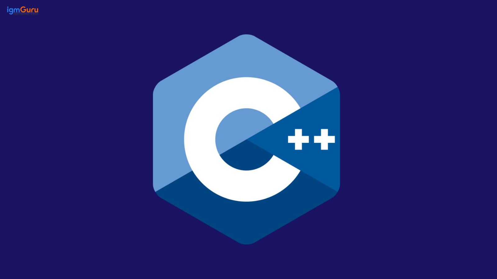
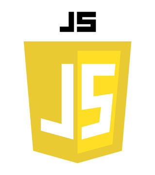
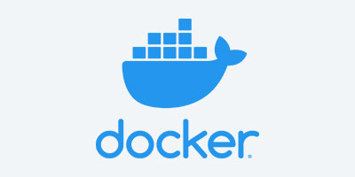
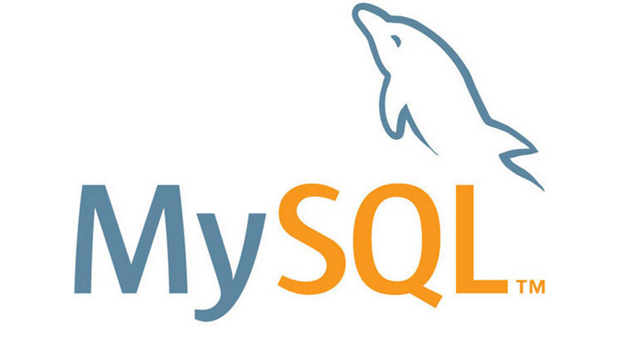
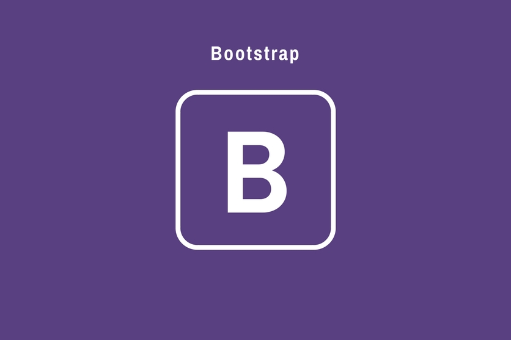
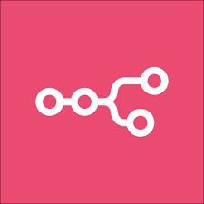
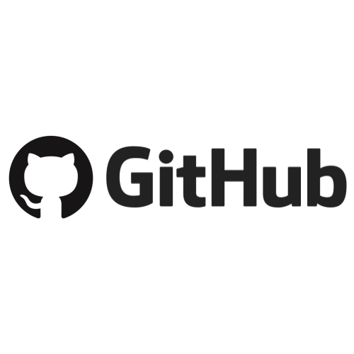

Nos Compétences

Python
Python est un langage de programmation interprété, simple et puissant, très populaire dans plusieurs domaines. Il est connu pour sa syntaxe claire et facile à lire, ce qui en fait un excellent choix pour les débutants comme pour les professionnels.
niveau débutant

C#
C# est un langage de programmation créé par Microsoft. Il est orienté objet, puissant et souvent utilisé pour développer des applications Windows, des jeux vidéo (avec Unity) et des applications web via le framework .NET.
niveau avancé

C++
C++ est un langage de programmation rapide, puissant et orienté objet, dérivé du langage C. Il est souvent utilisé pour le développement de logiciels performants, comme les jeux vidéo, les applications systèmes, les simulateurs ou encore les logiciels embarqués.
niveau débutant

HTML
HTML n’est pas un langage de programmation, mais un langage de balisage utilisé pour structurer le contenu d’une page web. C’est la base de tout site Internet : il permet d’organiser le texte, les images, les liens, les tableaux, etc.
niveau avancé

CSS
CSS est un langage de style utilisé pour décrire l’apparence et la mise en forme des pages web écrites en HTML. Il permet de rendre un site beau, lisible et attrayant, en contrôlant les couleurs, les polices, les marges, les tailles, les animations, etc.
niveau avancé

js
JavaScript est un langage de programmation utilisé principalement pour rendre les pages web interactives et dynamiques. C’est l’un des trois piliers du développement web avec HTML (structure) et CSS (style).
niveau débutant

Docker
Docker n’est pas un langage de programmation, mais un outil de virtualisation légère très populaire chez les développeurs et les administrateurs système. Il permet d’exécuter des applications dans des conteneurs isolés, ce qui facilite leur déploiement, leur partage et leur exécution sur n’importe quelle machine.

MySQL
MySQL est un système de gestion de bases de données relationnelles (SGBDR) basé sur le langage SQL (Structured Query Language). Il est utilisé pour stocker, organiser et gérer les données d’un site web ou d’une application.

Visual Studio
Visual Studio est un environnement de développement intégré (IDE) créé par Microsoft. Il permet aux programmeurs d’écrire, tester et déboguer du code dans plusieurs langages, comme C#, C++, Python, JavaScript, et bien d’autres.

Linux
Linux est un système d’exploitation libre et open source, très utilisé par les programmeurs, les administrateurs système et dans les serveurs du monde entier. Il est connu pour sa stabilité, sa sécurité et sa flexibilité.

Bootstrap
Bootstrap est un framework CSS open source créé par Twitter. Il sert à concevoir des sites web modernes, responsifs et bien structurés rapidement, sans devoir tout coder à la main.

n8n
n8n est un outil d’automatisation open source qui permet de connecter différentes applications et services sans avoir à écrire beaucoup de code. C’est une alternative libre à Zapier ou Make (Integromat), mais avec beaucoup plus de flexibilité et de contrôle.

github
GitHub est une plateforme en ligne utilisée par les développeurs pour héberger, partager et collaborer sur du code. Elle repose sur Git, un système de gestion de versions créé par Linus Torvalds (le créateur de Linux).